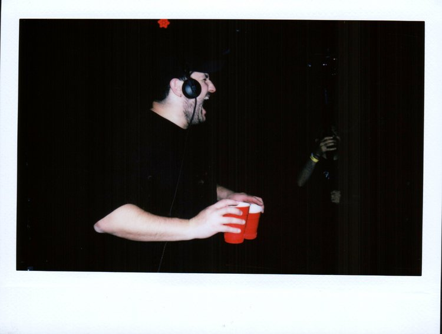
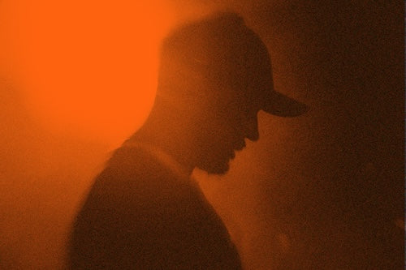

THE DEAN IS THINKING / PROBABLY ABOUT BASS
THE DEAN IS THINKING / PROBABLY ABOUT BASSDean / Founding Faculty · fictional role
AYYBO
Dean of GDBU · Chair of Low End Studies
Office hours: whenever the bassline makes that face. GDB-000 is the required reading.
Artist + photo source ↗Office of the Dean
Actual artists. Fictional appointments. Real music. Office hours are whenever the bassline makes that face.
Faculty directory
The staff room is suspiciously loud. Real public artist images; campus captions and appointments are our joke.
THE DEAN IS THINKING / PROBABLY ABOUT BASSDean of GDBU · Chair of Low End Studies
Office hours: whenever the bassline makes that face. GDB-000 is the required reading.
Artist + photo source ↗
OFFICE HOURS / BEHIND THE DECKSBassline Architecture · Dancefloor Physics
The bounce has escaped the lecture hall. Please report directly to the floor.
Public photo gallery ↗
LAB STATUS / KICK TEMPORARILY MISSINGClub Systems · Club Science
Takes the kick away. Lets you miss it. Brings it back like he did you a favor.
Artist + photo source ↗Minimal Groove Studies
One loop. No rush. Somehow you’ve been doing that same little move for twenty minutes.
Public channel portrait ↗Bounce + Crowd Control
The hook has entered the group chat. Nobody is getting it out of their head tonight.
Artist links ↗